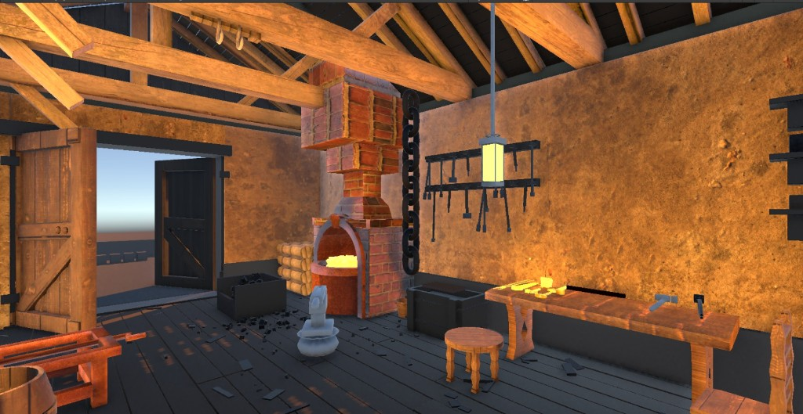
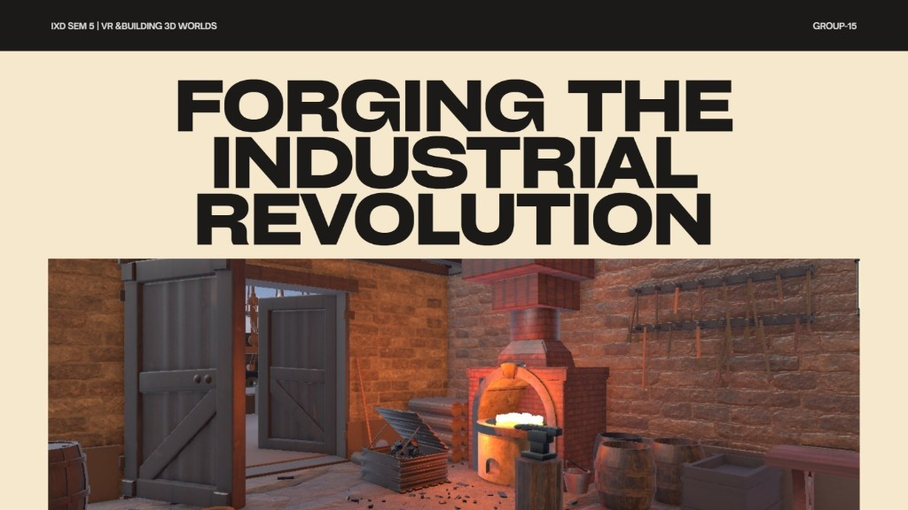
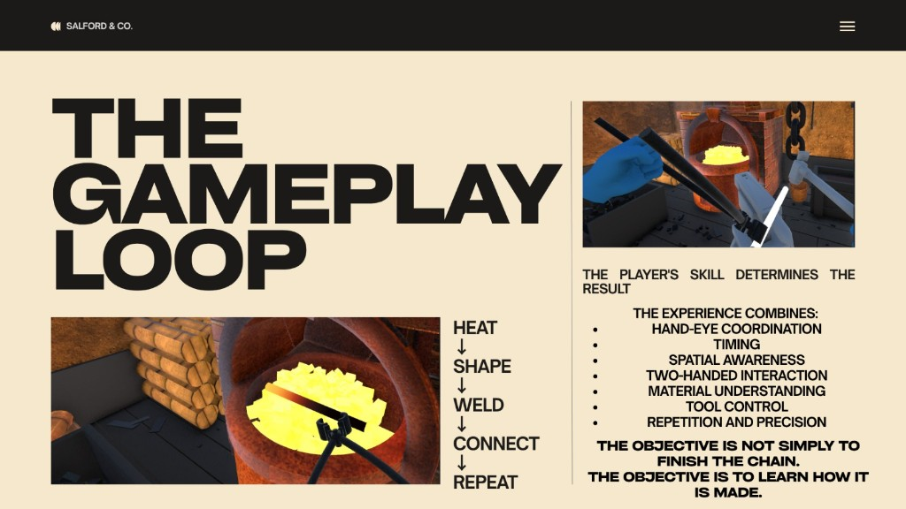
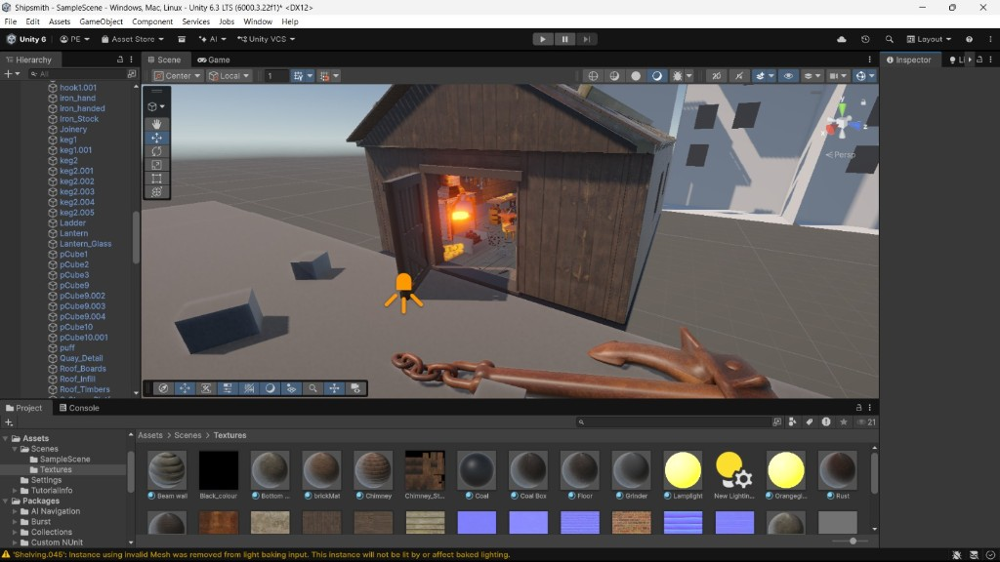
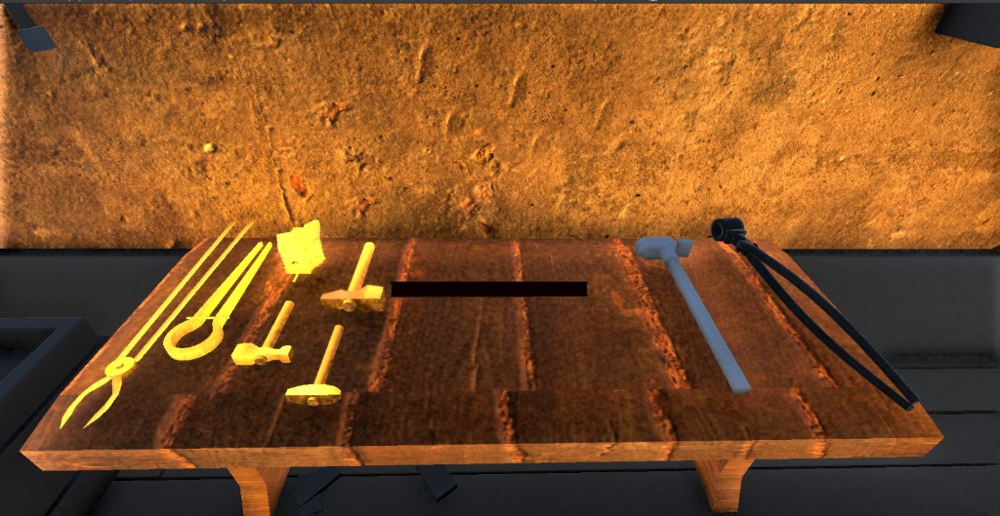
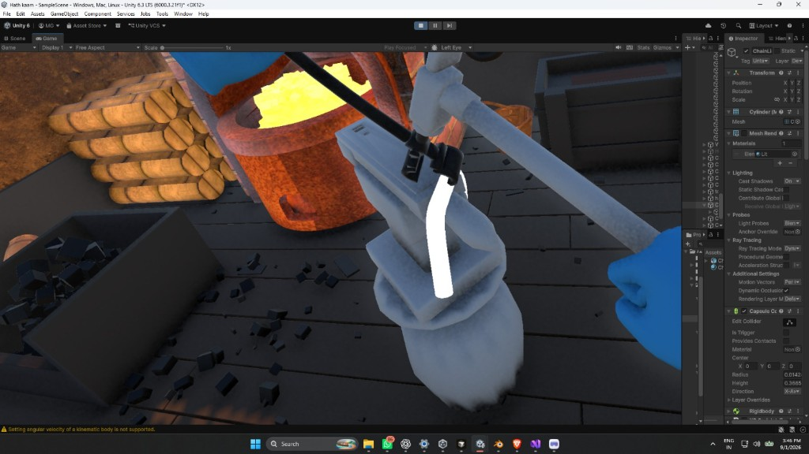

Looking
Gaze highlight on object. No grab yet. Hands idle.
Project 02 · 2026
Reconstructing a historical craft experience through spatial interaction.

The workshop as a place: forge, anvil, bench, and the door back to the yard.
Context
Early-1800s shipbuilding and blacksmithing were spatial crafts: heat, weight, distance, and sequence. Documentation records them as images and text. This project asks what happens when the user is placed inside the process — not in front of a description of it.

Studio brief: IxD Sem 5 · VR & Building 3D Worlds · Group 15. The world is the argument.
Why VR?
VR was chosen because the objective is not to show historical information. It is to let someone experience spatial processes — reach, heat, timing, and the layout of a working shop — with their own body.
Experience map

Heat → shape → weld → connect → repeat. Skill determines the result; the objective is to learn how a chain is made, not only to finish it.
Environment

Outside: timber shed, open doors, light from the forge. The chain and anchor announce what this place makes.

Inside: tongs, hammers, and stock wait on the bench. Tools are found by looking, not by a menu.
Environment wireframe · overhead
Dashed = navigation · Solid = interaction volumes · Player starts facing the anvil
Interaction

Two-handed work at the fire. Heat is visible; timing is in the hands, not on a HUD.
Gaze highlight on object. No grab yet. Hands idle.
Confirm via dwell or trigger. Outline tightens.
Object parents to hand. Weight suggested by motion.
Repeated strike. Heat + timing as feedback.
Glow, spark, or sag depending on state.
Audio + world change. Shop remains explorable.
VR interaction model
Input is embodied. The system never assumes a cursor. Gaze finds, hands confirm, the world answers.
Technical pipeline
A linear making process: model historically, assemble spatially, then design the verbs the body can perform.
Built in Unity: scene assembly, lighting, and interaction volumes around a historically modelled shop.
Final experience


Reflection
Lesson 01
Layout, reach, and sightlines did more work than any menu. The shop had to be readable with the body, not a HUD.
Lesson 02
Picking something up is not a click. Weight, heat, and repetition had to be suggested even when physics were simplified.
Lesson 03
If the user is reading, they have left the century. Instruction lives in the world: glow, sound, the next tool in reach.
Next project
Blume Color →